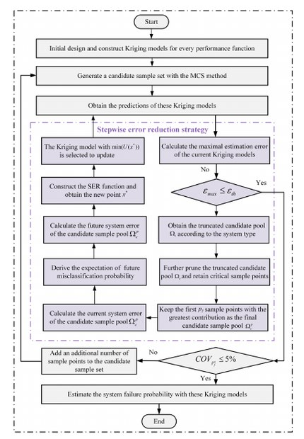
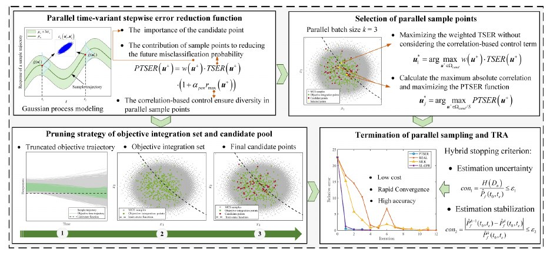
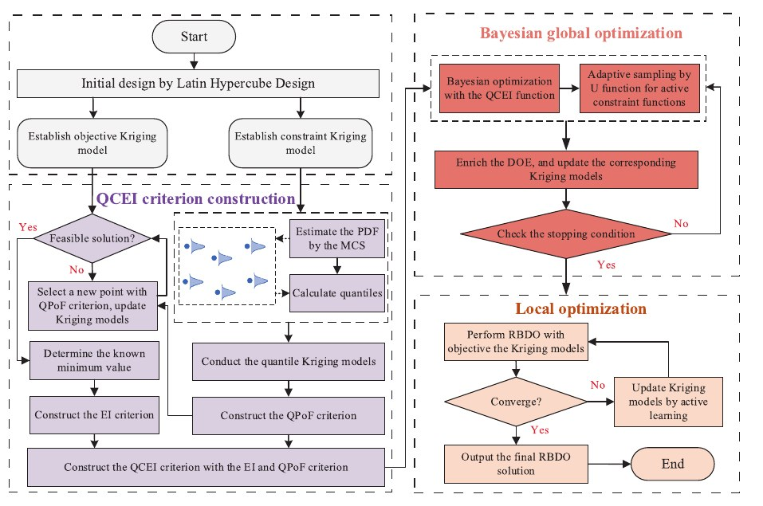

Yuwei Shi is currently a Ph.D. student in Management Science and Engineering at the School of Economics and Management,
Nanjing University of Science and Technology. She will visit the Department of Mechanical Engineering at KAIST as a joint-training doctoral student from September 2025 to September 2026.
Her research interests include surrogate modeling, reliability analysis, and reliability-based design optimization.
She focuses on efficient modeling and optimization methods for complex engineering systems under uncertainty, especially active learning Kriging, Gaussian process modeling, time-variant reliability analysis, and quality-oriented design optimization.
Education
2025.09 - 2026.09
KAIST · Mechanical Engineering
Joint-training Ph.D. student.
2023.09 - Present
Nanjing University of Science and Technology
Ph.D. student in Management Science and Engineering.
2021.09 - 2023.09
Nanjing University of Science and Technology
M.Sc. student in Management Science and Engineering.
Honors & Experience
2026
Outstanding Doctoral Student
Nanjing University of Science and Technology.
2025.09 - 2026.09
Joint-training doctoral program
Department of Mechanical Engineering, KAIST.
Research Area
Surrogate Modeling
Kriging, Gaussian process modeling, active learning, and multi-fidelity surrogate strategies for expensive engineering simulations.

Active learning Kriging and stepwise error reduction strategy.
Reliability Analysis
Efficient uncertainty quantification, failure probability estimation, and adaptive sampling methods for static and time-variant reliability problems.

Parallel adaptive Gaussian process modeling for time-variant reliability analysis.
Reliability-Based Design Optimization
Reliability constraints, robust design, quality loss, and multi-objective optimization for high-reliability product design.

Reliability-based design optimization with quantile Kriging and Bayesian optimization.
Publication
10 published · 2 under review · 1 working paper
J1
Active learning Kriging-based multi-objective modeling and optimization for system reliability-based robust design